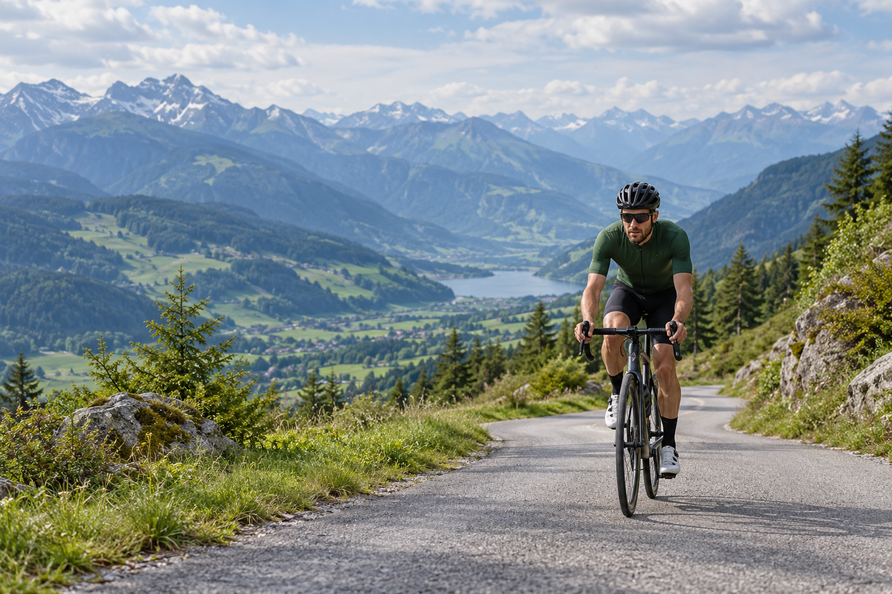
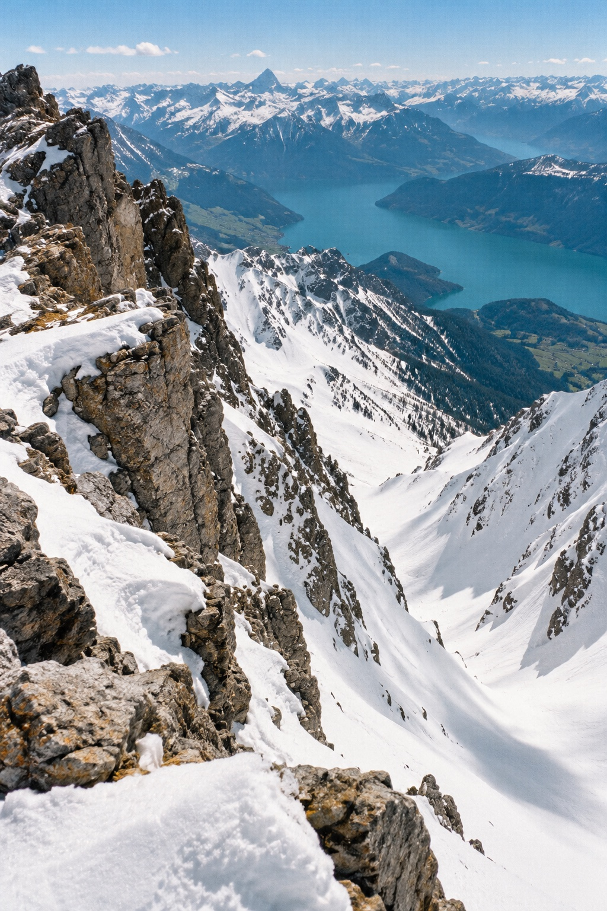

● SEASON 269 climbs down, 4 to go
COLLECT
THE CLIMBS.
Every summit becomes a badge — its profile, its name, the day you rode it. Line them up and your season reads like a podium.


STAGE PROFILE · PRATO → PASSO DELLO STELVIO
48 HAIRPINS.
ONE LINE.
Distance0.0km
Altitude920m
Gradient6.4%
Hairpin0
SCROLL TO TRACE THE CLIMB 0%
SEASON 26 · MARCH → NOW
THE SEASON,
IN NUMBERS.
Every ride you log adds to the same four lines.
Nothing to buy, nothing to unlock early — you earn
the next badge on the road.
0climbs finished
0metres climbed
0kilometres ridden
0riding days
WEEK 10WEEKLY CLIMBING, METRESWEEK 35
BADGE WALL · 13 PASSES
NINE EARNED.
FOUR WAITING.
Greyed badges are the climbs still on your list. Ride
one and it prints itself in colour, with the date you
did it.
Earned Still to ride